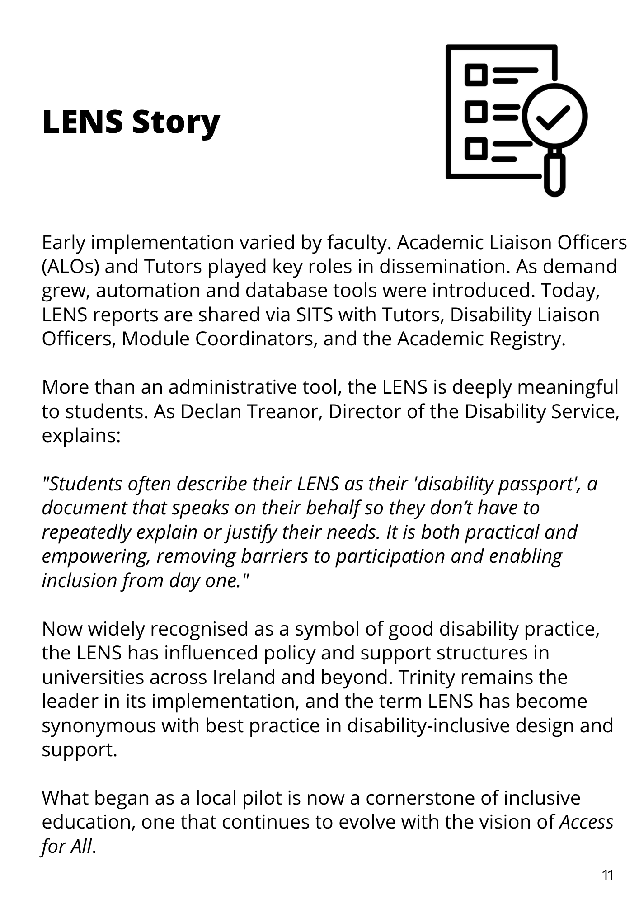
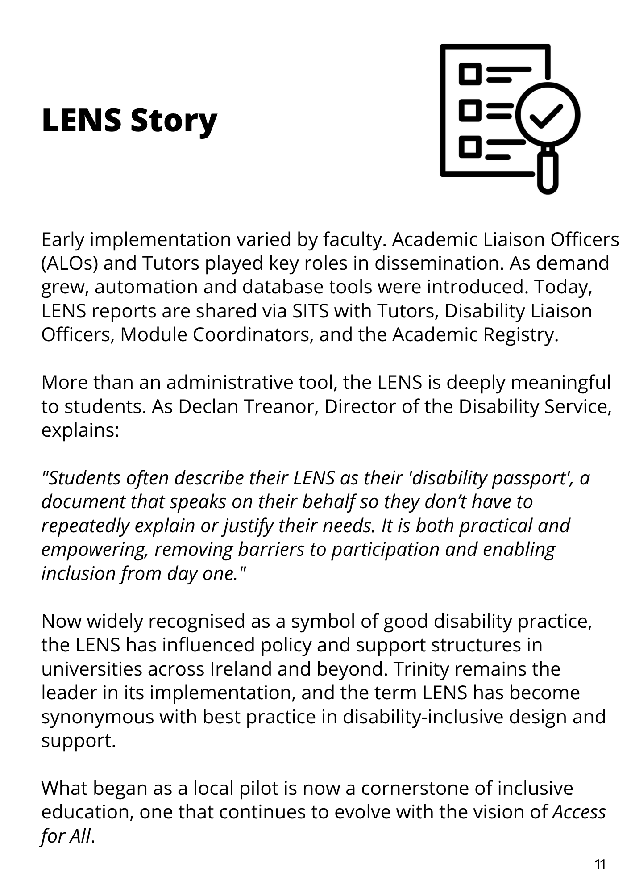
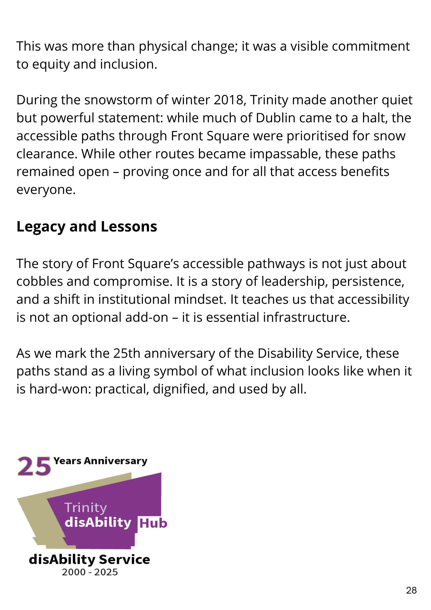
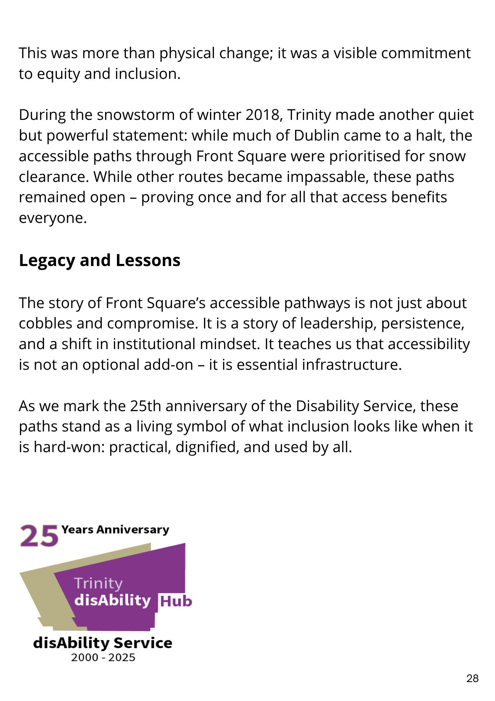
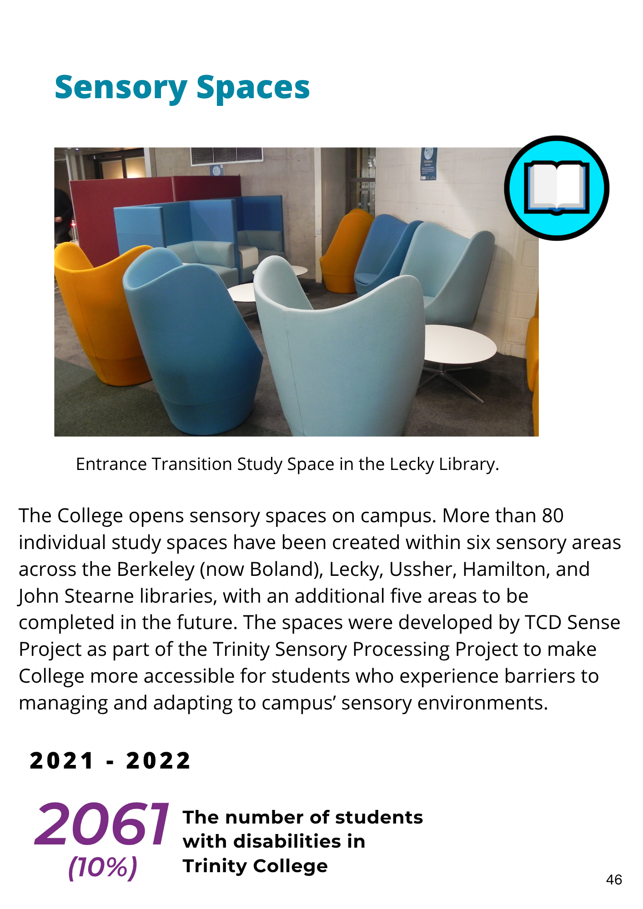
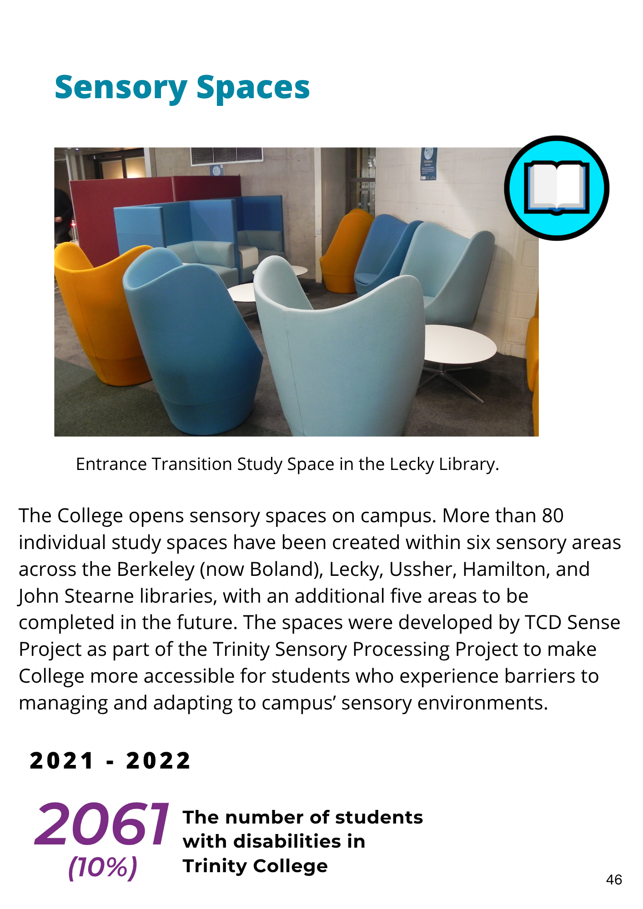
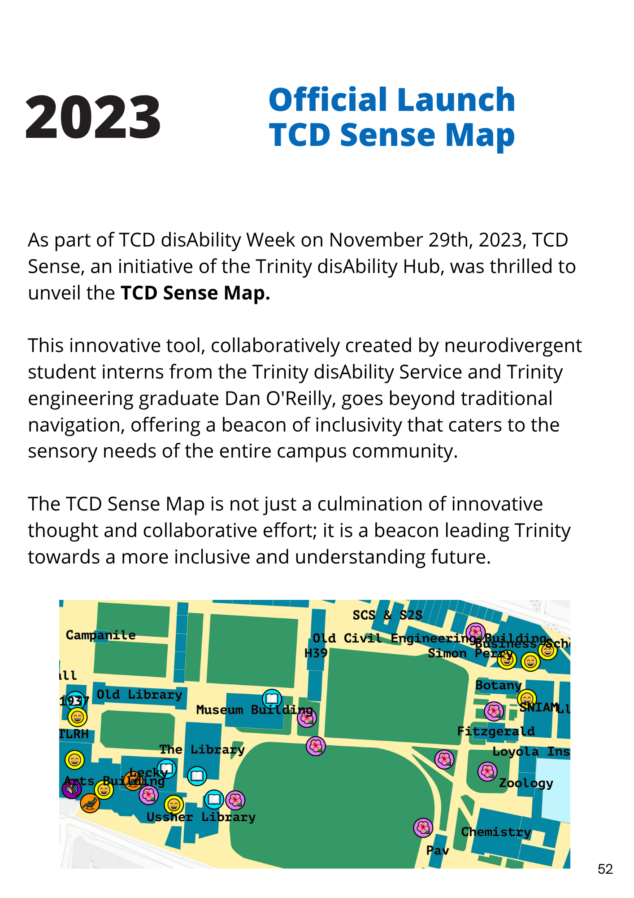
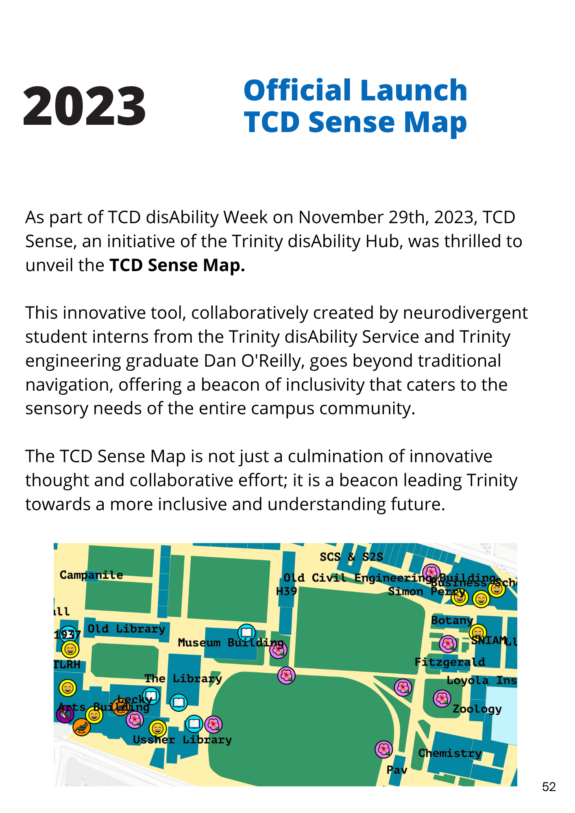
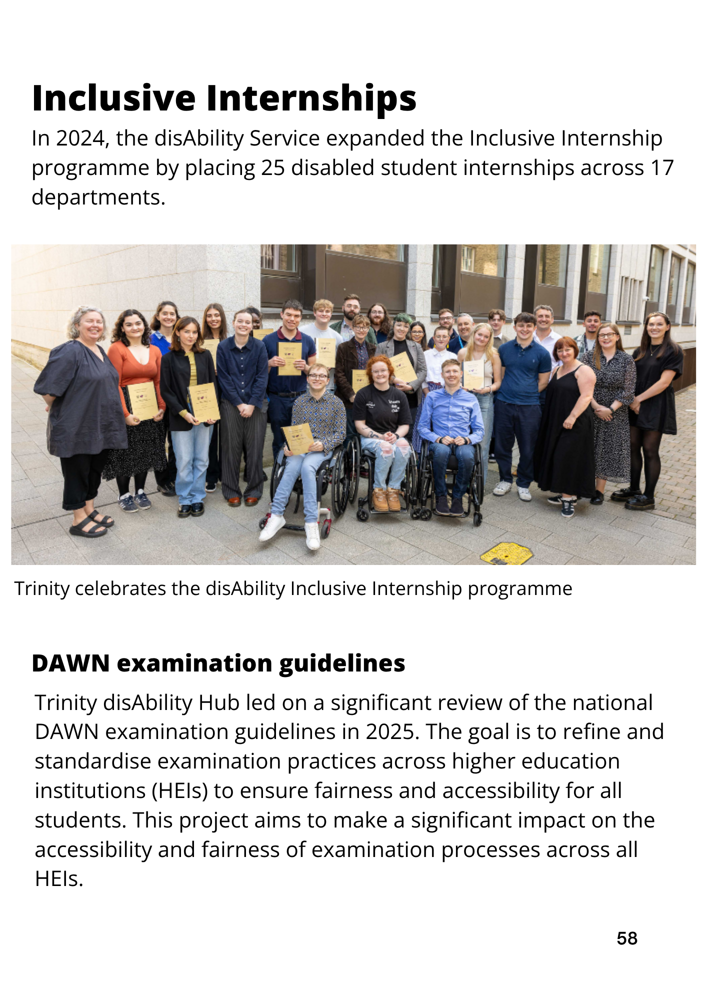
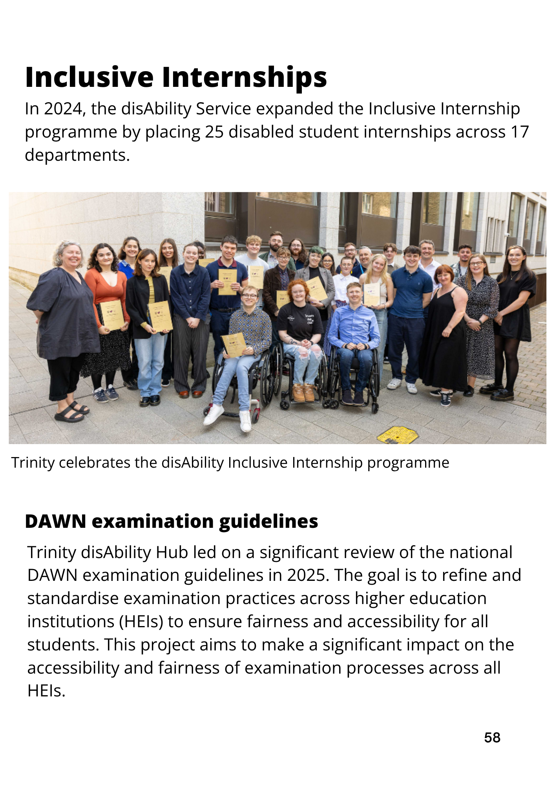

Trinity disAbility Service Journey 1995-2024
This commemorative publication celebrates 25 years of the Trinity
disAbility Service at Trinity College Dublin. From its beginnings in a
single office in 1995 to the opening of the state-of-the-art Trinity
disAbility Hub in 2022, the Service has grown into a national and
international leader in inclusive education.
Featuring personal reflections, landmark achievements, and student-led
innovation, the timeline captures Trinity's commitment to access,
belonging, and empowerment. It also introduces the bold 2025-2030
Action Plan focused on universal access, sustainability, and inclusive
leadership.


 



 



 



 

 
